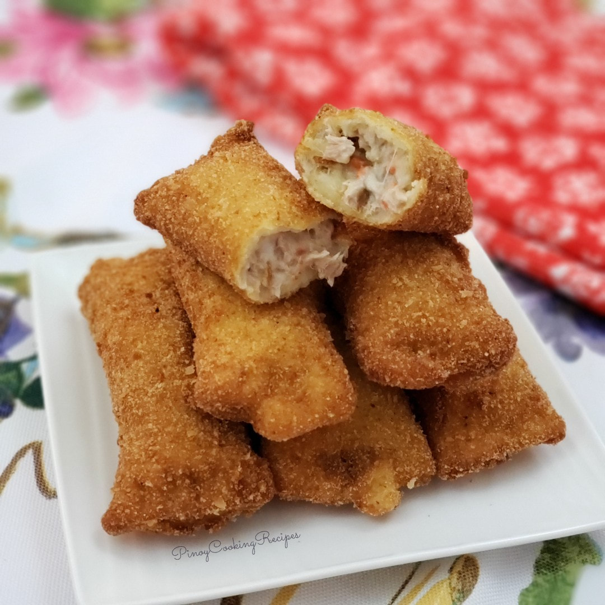

Home
Tuna Pie Recipe

Tuna pie is a savory handheld pastry filled with a creamy, cheesy mixture of flaked tuna, mayonnaise, and vegetables.
It features a savory, creamy tuna and cheese filling folded inside flattened white bread, coated in breadcrumbs, and deep-fried to golden perfection.
Ingredients
- Sliced White Bread
- Canned Tuna
- Red Onions
- Mayonnaise
- Cheese
- Milk and Egg
- Bread Crumbs
- Oil
Steps
- Combine tuna, mayonnaise, onions, salt, and pepper in a bowl. Cut quick-melt cheese into strips and set aside.
- Trim the edges of the sliced bread and flatten until very thin using a rolling pin.
- Spoon tuna filling on the lower part of the bread and place a cheese strip on top.
- Fold the upper half of the bread over the filling. Using the tines of a fork, press on the edges to fully seal.
- Whisk eggs and milk in a bowl until well blended. Briefly dip the bread pocket in egg mixture and roll in crumbs, patting down to fully coat.
- Carefully add the breaded pies in a single layer to about two inches of hot oil and deep-fry until crunchy and golden. Remove from the pan, drain on a wire rack, and serve it.